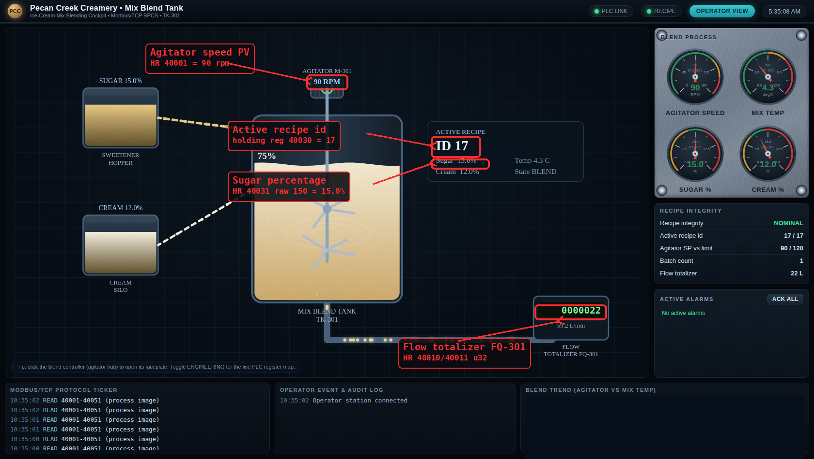
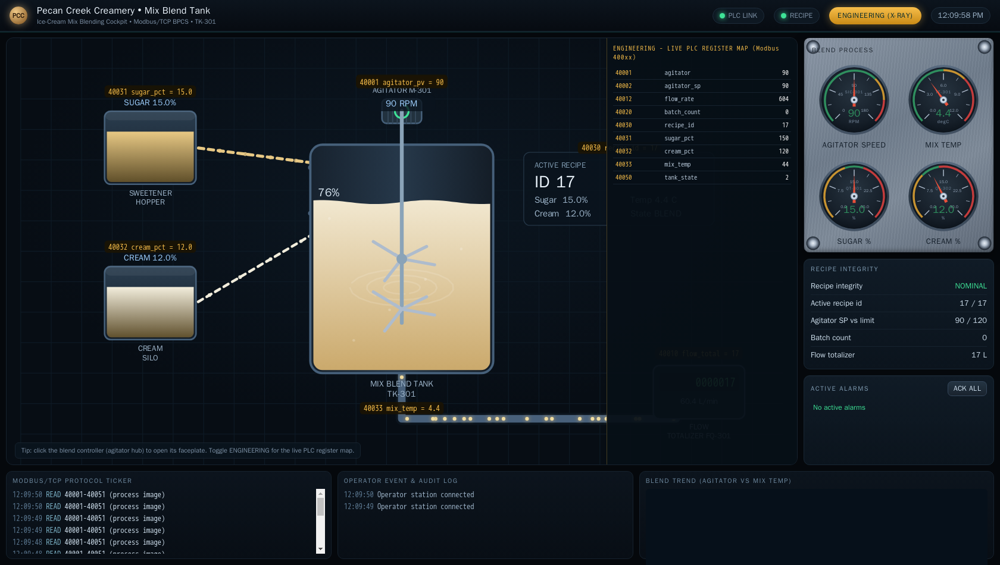
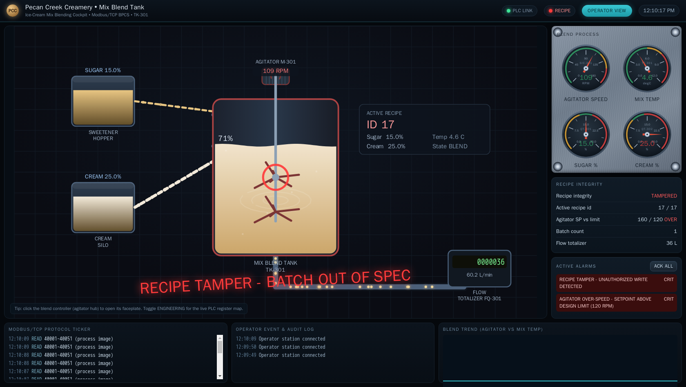
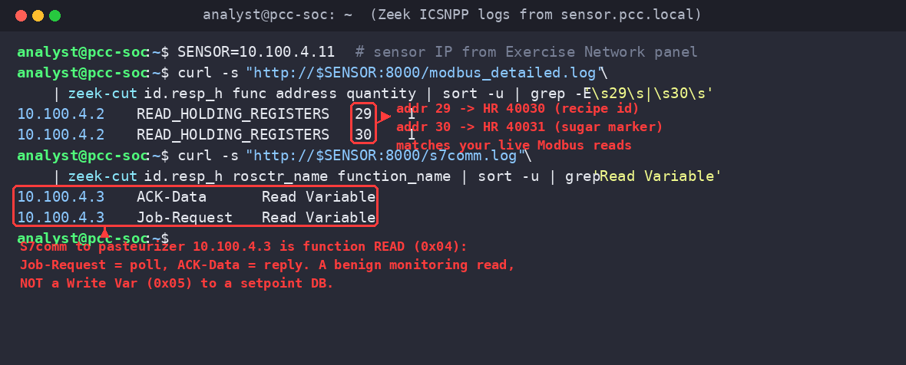

Exercise OTSOC-2.1: Reading the Blend and the Pasteurizer
Engagement Status
| Client | Pecan Creek Creamery (fictional) |
|---|---|
| Role | OT SOC Analyst, Mix Line |
| Phase | Visibility Protocol Analysis Detection |
| Priority order | Safety, then Integrity, then Availability, then Confidentiality |
What you know so far: Level 1 gave you an asset inventory and a Purdue-level map of the plant. You know the blend tank and the pasteurizer sit on the mix line, but you cannot yet tell a normal batch from a tampered one because you cannot read either protocol on the wire. Level 2 fixes that, one protocol at a time.
Scenario
You are an OT SOC analyst at Pecan Creek Creamery. Two field links cross your sensor on the mix line. The blend tank mix.pcc.local speaks Modbus/TCP on port 502, and the HTST pasteurizer past.pcc.local speaks classic S7comm on port 102. Before you can tell a normal cycle from an abnormal one, you have to read each protocol on the wire and map raw register and datablock addresses to physical meaning.
For the blend tank you will decode a Read Holding Registers response and map values to agitator speed, the flow totalizer, the recipe id, and the sugar percentage. For the pasteurizer you will walk the TPKT, COTP, and S7comm stack and learn to tell a datablock read from a write to the cut-in setpoint. You are reading and decoding only. No write touches either device in this exercise.
Your passive sensor sensor.pcc.local serves Zeek logs over HTTP on port 8000, built from a recorded capture of the plant control network. Because the logs come from that recorded capture, the hosts in modbus.log and s7comm.log carry the plant's own control-network addressing (10.100.4.x), not your own session subnet. A captured host lines up with its live device in your Exercise Network panel by their shared last octet: the blend tank shows in the capture as 10.100.4.2 and answers live at the panel IP ending in .2, and the pasteurizer shows as 10.100.4.3 and answers live at the panel IP ending in .3. You read the live devices for their register values and cross-check those reads against the sensor's recorded logs.
Why this matters
An OT SOC analyst who cannot read the control protocol is blind. Commercial OT monitoring tools label traffic for you, but they label it from the same byte fields you are about to decode by hand, and they are wrong often enough that you must be able to verify them.
Three concrete reasons the skill pays off. First, normal-versus-abnormal lives in the register values, not the packet count. A blend tank that reads recipe 17 at 15.0 percent sugar is running the commissioned vanilla base; the same tank reading a recipe id nobody scheduled is the first sign of recipe tampering, and you only see it if you can map register 40030 to "recipe id." Second, the read-versus-write distinction is the whole ballgame in detection. A pasteurizer flooded with datablock reads is a healthy HMI poll; a single write to the cut-in setpoint datablock is a potential food-safety event. The protocols carry those two cases in different function codes, and you have to recognize them on sight. Third, when an incident lands on your desk as a PCAP, the vendor tool may be offline or may not parse the dialect, and your ability to decode the frame by hand is the difference between a real timeline and a guess.
The blend fingerprint you recover here is a training artifact. The skill of mapping a raw address to a physical tag is permanent and transfers to every protocol in this track.
| Credentials in scope | Username | Password | Where it is used |
|---|---|---|---|
| Operator HMI | operator |
PecanCreek#2026 |
Reference only; Modbus and S7 reads require no login |
The operator cockpit
The mix line runs a live operator cockpit for the blend tank. Open it in a browser at the address shown for the HMI in the Exercise Network panel; the cockpit polls mix.pcc.local over Modbus and renders the agitator, the fill valve, the recipe card, and the process gauges in real time. The same holding registers you are about to decode by hand are exactly what the operator watches on this screen, so the cockpit is your reference picture for what a normal vanilla batch looks like.

Flip the cockpit into its Engineering view and every element is labelled with the live Modbus register behind it, so the agitator setpoint reads its holding-register address straight off the HMI. The same register map you are about to decode by hand sits one click away on the operator console.

Learning Objectives
- Filter and decode Modbus Read Holding Registers traffic from the blend tank
- Map raw holding-register addresses to agitator speed, flow totalizer, recipe id, and sugar percentage
- Walk the TPKT to COTP to S7comm stack on the pasteurizer link
- Recognize the difference between an S7comm read and a write to the cut-in setpoint datablock
- Compose the blend fingerprint flag from the recipe and sugar markers
| Detail | Value |
|---|---|
| Difficulty | Beginner |
| Estimated Time | 45 minutes |
| Prerequisites | Level 1 (Exercises 1.1 to 1.4) |
| Flag | Source | Found? |
|---|---|---|
OCR{blend_recipe_<id>_sugar_<pct>} |
Decoded recipe id and sugar marker from the blend tank |
Before You Begin: Read Your Target IPs
Each student gets a private /24 for the plant. The exact addresses change every spawn, so never paste a literal subnet into a command. Open the Exercise Network panel for this exercise and read the per-host IPs it shows for mix.pcc.local and past.pcc.local. Drop them into shell variables so the rest of the page is copy-paste safe. Replace the placeholder values below with the IPs from your own panel.
The sensor's recorded logs use the plant control-network addressing (10.100.4.x), while your panel devices live on your own session subnet. The two line up by shared last octet, so the blend tank you read live at the panel IP ending in .2 is the same host the capture calls 10.100.4.2, and the pasteurizer at the panel IP ending in .3 is 10.100.4.3 in the logs. Read the live devices at their panel IPs; use the capture only to cross-check.
Kali - set target variables
Confirm both targets answer before you decode anything. A closed port here means a connectivity problem (VPN tunnel or exercise relaunch), not a protocol problem, and it is cheaper to find out now.
Expected output
Two succeeded! lines mean both control links are up and you can move on. If either fails, fix connectivity before continuing.
Part 1: Decode Modbus on the Blend Tank
Step 1: Capture a Read Holding Registers exchange
The cleanest way to learn a protocol is to watch one transaction end to end. You will start a short capture filtered to Modbus, then in a second shell poll a single register so the capture holds exactly one request and one response. Run the capture first and leave it running.
Kali - capture Modbus on port 502 (shell one)
With the capture live, poll the recipe-id register from a second shell. Modbus addresses are zero-based on the wire, so the 1-indexed holding register 40030 is protocol address 29 (40030 minus the 40001 base). Reading one register keeps the exchange small and easy to read in the capture.
Kali - read the recipe id (shell two)
python3 - <<'PYEOF'
import os
from pymodbus.client import ModbusTcpClient
c = ModbusTcpClient(os.environ["MIX"], port=502, timeout=5)
assert c.connect(), "could not connect to the blend tank"
rr = c.read_holding_registers(address=29, count=1, slave=1)
print("recipe_id (40030) =", rr.registers[0])
c.close()
PYEOF
A value of 17 is the commissioned vanilla base recipe. Any other value would mean the tank is running a recipe the schedule did not call for, which is the integrity signal you are training your eye to catch.
To see what that integrity signal looks like on the operator side, here is the same cockpit after an attacker writes an out-of-spec recipe and overspeeds the agitator with Modbus function 6. You are reading only in this exercise, but the cockpit makes the case for why the read-versus-write distinction matters: a single unauthenticated write turns the green vanilla batch into the alarm screen below.

Step 2: Read the response off the wire
Now stop the capture and decode the bytes the PLC actually sent. The point is to connect the high-level pymodbus call to the raw frame, so you trust neither the library nor a vendor tool blindly. Stop tshark, then read the Modbus fields out of the capture.
Kali - stop capture and decode the frame
Frame 1 is your request: function code 3 (Read Holding Registers), reference number 29, word count 1. Frame 2 is the response from the same host carrying the register value 17. The function code is the read-versus-write tell. Function code 3 is a read; you will not see function code 6 or 16 in this exercise because nothing writes.
Step 3: Map the tag block to physical meaning
A single register is not a process picture. Read the block that matters for the blend fingerprint so you can map raw addresses to tags. The agitator speed, flow totalizer, recipe id, and sugar percentage live in adjacent registers, so one read covers them. Watch the scaling: the sugar register is an integer scaled by ten.
Kali - read and map the blend tag block
python3 - <<'PYEOF'
import os, struct
from pymodbus.client import ModbusTcpClient
c = ModbusTcpClient(os.environ["MIX"], port=502, timeout=5)
c.connect()
agitator = c.read_holding_registers(address=0, count=1, slave=1).registers[0] # 40001
hi, lo = c.read_holding_registers(address=9, count=2, slave=1).registers # 40010/40011 u32
flow = struct.unpack(">I", struct.pack(">HH", hi, lo))[0]
recipe = c.read_holding_registers(address=29, count=1, slave=1).registers[0] # 40030
sugar_x10= c.read_holding_registers(address=30, count=1, slave=1).registers[0] # 40031
c.close()
print(f"agitator_rpm_pv (40001) = {agitator}")
print(f"flow_total (40010/11 u32) = {flow}")
print(f"recipe_id (40030) = {recipe}")
print(f"sugar_pct (40031) = {sugar_x10/10:.1f} % (raw {sugar_x10})")
PYEOF
Expected output
The agitator runs near 90 rpm, the flow totalizer is a 32-bit value spread across two registers (high word first), the recipe is 17, and the sugar register reads raw 150 which scales to 15.0 percent. The recipe id and the sugar marker are the two halves of your blend fingerprint.
Step 4: Confirm with the ASCII recipe signature
The commissioning crew also stored a plaintext fingerprint string in registers 40500 through 40515, the same pattern you saw in Level 1 on other devices. Reading it confirms both markers in one shot and gives you a sanity check against the numeric registers. Each register holds two ASCII bytes, high byte first.
Kali - decode the recipe signature block
python3 - <<'PYEOF'
import os
from pymodbus.client import ModbusTcpClient
c = ModbusTcpClient(os.environ["MIX"], port=502, timeout=5)
c.connect()
regs = c.read_holding_registers(address=499, count=16, slave=1).registers # 40500-40515
c.close()
text = "".join(chr((r >> 8) & 0xFF) + chr(r & 0xFF) for r in regs).rstrip("\x00")
print("recipe_sig =", text)
PYEOF
The signature string spells out the same two markers you decoded numerically: vanilla recipe 17 at sugar 150 (15.0 percent). Both paths agree, so you can trust your mapping.
Part 2: Walk the S7comm Stack on the Pasteurizer
Step 5: Capture the S7comm handshake and a read
Classic S7comm rides on COTP, which rides on TPKT, which rides on TCP/102. You will capture a short session so you can see the layered stack and the function calls. Start the capture first.
Kali - capture S7comm on port 102 (shell one)
With the capture live, read one pasteurizer datablock from a second shell so the trace contains a real S7 read. The hold-temperature process value lives at DB1 byte 0 as a big-endian value scaled by 100. python-snap7 speaks the protocol for you.
Kali - read the hold temperature (shell two)
A hold temperature near 79.2 C is a normal HTST run. The legal cut-in floor for this pasteurizer is 79.0 C, so the process is sitting just above the line where forward flow is allowed. Hold that number in mind; in Level 4 the diversion-valve exercise turns on whether the temperature stays above it.
Step 6: Tell a read from a write in the S7 trace
Stop the capture and inspect the S7comm function fields. The whole point of this step is recognition: a read and a write look different on the wire, and your detections will key on that difference. The Wireshark S7comm dissector exposes the function and item area in named fields.
Kali - stop capture and inspect S7 functions
Function 0x04 is Read Var; function 0x05 is Write Var. Everything you captured is 0x04, a read of DB1, which is exactly what a monitoring poll looks like. A write to the cut-in setpoint datablock would show up as function 0x05 targeting that DB, and that single byte is the difference between a benign poll and a command that could lower the pasteurizer's legal temperature floor.
Why the rosctr and func fields matter
The S7 ROSCTR (remote operating service control) byte says whether a message is a job request or an acknowledgement. The param func byte (0x04 read, 0x05 write) says what the job does. A detection that alerts on func == 0x05 to the pasteurizer DB catches setpoint tampering without drowning in the normal flood of func == 0x04 reads. You will write exactly that kind of rule in Level 3.
Step 7: Cross-check against the sensor logs
Your passive sensor sensor.pcc.local runs Zeek with the ICSNPP analyzers over a recorded capture of the plant control network and writes per-protocol logs you can pull over HTTP. Because the logs come from that recorded capture, the responders appear under the plant's own addressing (10.100.4.x): the blend tank is 10.100.4.2 and the pasteurizer is 10.100.4.3, lining up with the live panel devices by shared last octet. Cross-checking your hand decode against modbus.log and s7comm.log builds the habit of using the SOC's own telemetry. Read the sensor IP from the Exercise Network panel into a variable first.
The base modbus.log records the function code but not the register address, so pull modbus_detailed.log for the address and quantity of each read. For the S7 side, s7comm.log carries the ROSCTR name and the function name per message.
Kali - pull the Zeek protocol logs
SENSOR=<sensor ip from the Exercise Network panel>
curl -s "http://$SENSOR:8000/modbus_detailed.log" | zeek-cut id.resp_h func address quantity 2>/dev/null | sort -u | grep -E '\s29\s|\s30\s'
curl -s "http://$SENSOR:8000/s7comm.log" | zeek-cut id.resp_h rosctr_name function_name 2>/dev/null | sort -u | grep 'Read Variable'
Expected output (the capture uses the plant control network 10.100.4.0/24)
The Zeek modbus_detailed.log confirms Read Holding Registers to the blend tank at 10.100.4.2 at protocol address 29 (your recipe-id read) and address 30 (your sugar-marker read), and s7comm.log confirms the S7 exchange to the pasteurizer at 10.100.4.3 was a Read Variable: the Job-Request is the poller's read and the ACK-Data is the pasteurizer's reply. Both match what you decoded by hand on the live devices at the panel IPs ending in .2 and .3. When the sensor and your manual decode agree, you can trust the sensor for the high-volume work and reserve hand decoding for the cases that look wrong.

Output Interpretation
- Modbus holding registers are zero-based on the wire: 1-indexed 40030 is protocol address 30. Always subtract the 40001 base before you build a request.
- Function code 3 is a Modbus read; codes 6 and 16 are writes. In this read-only exercise you see only code 3.
- The 32-bit flow totalizer spans two registers, high word first. Decode it as a big-endian
u32, not two separate values. - The sugar register is scaled by ten: raw 150 means 15.0 percent. Scaling errors are a common source of false alarms in OT monitoring.
- S7comm rides TPKT over COTP over TCP/102. Function
0x04is Read Var,0x05is Write Var. The read-versus-write distinction is the single most important thing to recognize for detection.
Analysis Questions
1. Why is the recipe id stored at 40030 but read with protocol address 30?
Reveal answer
Modbus documentation uses 1-indexed, type-prefixed addresses (4xxxx for holding registers) for human readability, but the wire protocol uses a zero-based 16-bit address with the type implied by the function code. Holding register 40030 is the 30th holding register counting from the 40001 base, so its wire address is 30. Off-by-one and off-by-the-base errors are the most common mistake when first reading Modbus, and they produce values that look almost right, which is worse than an obvious error.
2. You see a flood of S7comm function 0x04 messages to the pasteurizer. Benign or suspicious?
Reveal answer
Benign. Function 0x04 is Read Var, the bread and butter of an HMI or historian polling the controller. Volume of reads is normal and expected. The message you care about is a single function 0x05 (Write Var) to a setpoint datablock, because a write changes controller behavior. A good detection ignores read volume and alerts on the rare write to a sensitive DB.
3. The blend tank flow totalizer spans registers 40010 and 40011. What goes wrong if you read them as two separate 16-bit values?
Reveal answer
You get two unrelated-looking numbers instead of one running total. A 32-bit totalizer is split into a high word and a low word; reading them separately and reporting each as its own value loses the real count and can make a steadily climbing totalizer look like noise. You must read both registers in one request and reassemble them as a big-endian 32-bit integer (high word first for this device). Confirm word order against the documented value before you trust it.
4. Both targets answered with no authentication. What does that tell you about the plant's security posture?
Reveal answer
Classic Modbus/TCP and classic S7comm have no authentication or transport security at all, so any host that can reach port 502 or 102 can read every register and datablock. The exposure is a property of the protocol generation, not a misconfiguration you can patch on the device. The defensible control is network segmentation: only the HMI and the engineering workstation should be able to reach those ports, enforced at a firewall or conduit, with the SOC sensor watching the conversation. You will design exactly that boundary in Level 6.
Capture the Flag
The blend fingerprint flag is composed from the two markers you decoded on the blend tank: the active recipe id and the sugar percentage marker. From Step 3 the recipe id is the value at 40030 and the sugar marker is the raw value at 40031 (the integer, not the scaled percentage). The ASCII signature in Step 4 confirms both. Assemble them into the lowercase, underscore-only form:
Submit the assembled flag in the exercise panel.
Defensive Recommendations to Pecan Creek
| Finding | Risk | Mitigation |
|---|---|---|
| Unauthenticated Modbus and S7comm reads on the mix line | Medium | Restrict TCP/502 and TCP/102 to the HMI and engineering workstation via a conduit firewall |
| Plaintext recipe and commissioning data in registers | Low | Treat register contents as readable by everyone on the segment; do not store secrets there |
| No write protection on the pasteurizer setpoint datablock | High | Enable PLC protection level and alert the SOC on any S7 Write Var to a setpoint DB |
Key Takeaways
- Reading the protocol by hand is what lets you verify, or debunk, what a commercial OT monitoring tool tells you.
- The read-versus-write distinction (Modbus function 3 versus 6/16, S7 func
0x04versus0x05) is the foundation of every OT detection you will write. - Raw register addresses are meaningless until you map them to physical tags and apply the right scaling.
- The SOC sensor's Zeek logs and your manual decode should agree; when they do, trust the sensor for volume and reserve hand decoding for anomalies.